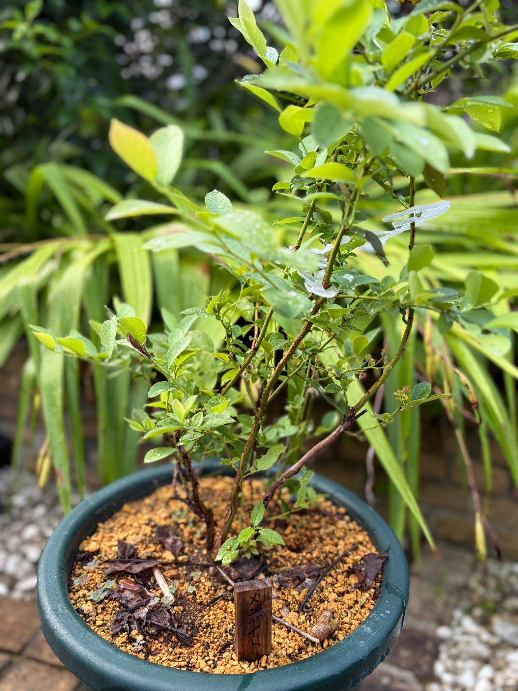

2026/09/05 初めての収穫を楽しんだメンデイト。鉢への植え付けから約8か月半、緑の枝葉の様子
昨年12月16日に大きなスリット鉢へ植え付けたメンデイトが、初めての夏を過ごしました。
今年はメンデイトだけでなく、一緒に迎えたクライマックスとプレミアも、3品種ともしっかり実をつけてくれました。収穫したブルーベリーは、ヨーグルトに混ぜておいしくいただきました。
購入したときには、苗のラベルにある果実写真を眺めながら、いつか自分で育てた実を食べられたらと思っていました。その楽しみを実際に味わえたことが、何よりうれしいです。
残念ながら、実がついているところや収穫した実の写真は撮れていません。今回は、9月5日のメンデイトの枝葉と鉢の様子を残しておきます。実を楽しんだ後の株も、季節ごとの姿として見守っていきたいと思います。
スリット鉢への植え付けから、約8か月半
メンデイトを購入したのは、2025年12月13日です。クライマックス、プレミアとともに迎え、その3日後の12月16日に、大きな濃緑色のスリット鉢へ植え付けました。
鉢には鹿沼土が広がり、株元の前に「メンデイト」と書いた木製の名札を立てました。そのときは赤や桃色、橙色、黄色の葉が目立ち、緑を残した葉も混じっていました。
今回の写真では、緑色や黄緑色の葉が枝の各所についています。冬の植え付け当日とは葉色の印象が変わり、鉢の上に緑の枝葉が広がっています。
株元から立ち上がる褐色の枝は今も見えますが、その周りには細い枝と葉が重なっています。冬に眺めた枝の骨組みに、季節を越した姿が加わりました。
撮影した向きや距離が違うため、枝が何センチ伸びたのか、葉が何枚増えたのかまでは比べられません。それでも、同じ鉢と名札のある株を、冬から夏へと続けて記録できたことをうれしく感じます。
3品種とも実をつけてくれました
今年のブルーベリーでうれしかったのは、3品種すべてで収穫を楽しめたことです。
クライマックスとプレミアは地植え、メンデイトは鉢植えで育てています。育てる形は違いますが、それぞれの株が実をつけてくれました。
購入するときには、実付きのことも考えて、同じラビットアイ系の異なる品種をそろえました。苗を並べて眺めていたところから、実際に実を収穫して食べるところまでつながりました。
ただ、実がついたという結果だけで、どの品種の花粉がどの株の受粉に役立ったのかまでは分かりません。3品種を一緒に育てた楽しみを感じながらも、花の時期や実付きについては、これからも一株ずつ見ていきたいと思います。
今回は品種ごとの収穫量や果実の大きさを詳しく比べた記録はありません。それでも、まずはメンデイトでも収穫できたことを、育て始めた年の大切な出来事として残しておきます。
収穫したブルーベリーは、ヨーグルトに混ぜていただきました
収穫した実は、ヨーグルトに混ぜて食べました。
いつものヨーグルトに、自分で育てたブルーベリーが加わると、少し特別に感じます。苗を選び、鉢へ植え付けたところから始まった楽しみが、食卓につながりました。
おいしくいただけたことが、何よりうれしいです。品種ごとの味を細かく比べることとは別に、自分で育てた実を採って食べる満足感がありました。
果実の写真を残せなかったことは心残りですが、ヨーグルトで楽しんだことも含めて、最初の収穫の記録にしておきます。
次に実をつけたときには、枝についている姿や、色づいていく途中の様子も残せたらと思います。今回食べて楽しめたことが、これからも育てていく励みになっています。
冬の赤い葉から、緑の枝葉が目立つ姿へ
植え付けた12月のメンデイトは、赤や桃色、橙色の葉が印象に残る姿でした。今回は、緑色や黄緑色の葉が目に入ります。
枝の途中には比較的大きな葉があり、細い枝先には小さな葉が集まっているところもあります。葉の向きや大きさが違うため、同じ株の中でも、枝ごとに見え方が変わります。
葉が近くに重なっているところもあれば、間隔が空いて枝がよく見えるところもあります。株全体が葉で埋まっているわけではなく、緑の葉と枝の線が組み合わさった姿です。
写真の上側には、手前に近くてぼけて見える葉もあります。そのため、写っている葉を一枚ずつ数えたり、枝先までの形をすべて追ったりすることはできません。
それでも、冬の色づいた葉の姿から、夏を過ごした緑の姿へと、季節の違いを感じます。果実だけでなく、葉の色が変わることも、育てながら眺める楽しみになっています。
緑色にも、濃さや明るさの違いがあります
今回の葉は、すべて同じ緑色ではありません。少し落ち着いた緑に見えるもの、明るい黄緑色のもの、黄色みを帯びたものがあります。
上の方や光の当たる葉は明るく見え、奥の葉は少し濃い色に感じられます。葉の向きによって、表面がよく見えるものと、裏側が見えるものもあります。
左上寄りには黄色みのある葉も見えますが、今回の一枚だけで、それがいつからその色になっているのかまでは分かりません。光の当たり方にも違いがあるので、明るく写っていることだけで黄変が進んだとは考えないようにします。
葉の大きさにも違いがあります。枝先近くの小さな葉と、その下に広がる大きめの葉が重なり、枝に沿って緑が続いています。
小さく明るい葉があるからといって、それをすべて今回出てきた新しい葉とは決めず、9月5日に見える姿として残しておきたいと思います。

葉の表面や、一部の傷みも見ておきます
葉の表面には水滴が見えるところがあります。光を受けた小さな粒が葉の上に残り、葉の面の様子が分かります。
一部には、葉先や縁の色が変わって見えるもの、暗い赤褐色の部分があるものもあります。緑の葉が目立つ一方で、すべてが傷みのない状態というわけではありません。
ただ、写真にはぼけている葉や重なっている葉も多く、細かな斑点の数や、株全体でどのくらいの葉に傷みがあるかまでは分かりません。はっきり見える部分を、そのまま残しておきます。
購入時や植え付け当日の葉にも、斑点や傷みはありました。しかし、季節を越しているので、今回の葉の変色を、冬から同じものが続いているとは考えられません。
収穫できたことは喜びながらも、今の葉の状態は別に眺めていきたいです。葉色や部分的な変色だけで原因を決めず、その後の変化も見守っていきます。
褐色の枝から、細い緑色の枝へ
株元付近には褐色の枝があり、そこから上や左右へ細い枝が伸びています。
右側には斜め上へ向かう比較的太い褐色の枝が見え、中央付近には上へ伸びる細い枝があります。緑色の部分と赤褐色の部分が混じり、枝によって色や太さが違います。
左側にも枝葉が広がり、鉢の上で株が左右へ展開しています。上に伸びるところと横へ広がるところの両方があるのは、植え付けた日の枝ぶりから続いて眺めているところです。
ただ、葉が広がり、撮影する角度も変わったことで、冬の写真とは枝の重なり方が違います。どの枝がどれだけ伸びたかを細かく比べるより、今回は株元から枝先へつながる形を残しておきます。
写真の上端より先へ続いている枝もあり、株の高さ全体は写っていません。鉢の大きさと見比べながら、今見えている範囲の姿を記録します。
細い枝先には、小さなまとまりも見えます
中央から右側の細い枝には、小さな緑色の部分がまとまっているところがあります。葉の付け根や枝先付近に、細かな形が見えています。
大きな葉や太い枝だけを眺めていると見落としそうですが、近くで見ると、こうした小さな部分にも目が向きます。
今回の写真だけでは、それぞれが何に当たるのか、どの段階のものなのかをはっきり見分けられません。花芽や果実だと決めつけず、枝先にこうした姿が見えることを残しておきます。
今後、同じ枝を近くから撮れたときには、形の変化を追えるかもしれません。株全体の姿とともに、枝先の小さなところも眺めていきたいと思います。
スリット鉢と名札が、記録の目印になっています
写真の下には、濃緑色のスリット鉢が写っています。その手前には、「メンデイト」と書いた木製の名札があります。
昨年12月に植え付けたときも、この鉢と名札を一緒に残しました。季節が変わって葉色や枝の見え方が変わっても、同じ株を見ていることが分かる目印です。
今回は枝葉が写真の上側に大きく広がり、鉢全体は写っていませんが、縁の形や色から、鉢植えで育てている姿が分かります。
鉢があることで、株元の場所や枝の広がりを、一つのまとまりとして眺められます。購入時の黒い育苗ポットから、この鉢へ植えたときのことも思い出します。
同じ鉢の中で季節を越した姿を、これからも写真でつないでいきたいです。
鹿沼土の表面には、落ち葉や小さな植物もあります
鉢の表面には、黄土色の鹿沼土が見えています。その上には枯れ葉や細い枝のようなものがあり、ところどころに小さな植物も見られます。
植え付け当日は鹿沼土が広く見え、株元の形も分かりやすい状態でした。今回は表面にいろいろなものが重なり、季節を過ごした鉢の姿になっています。
ただ、鉢の上にある枯れ葉を、すべてメンデイトから落ちたものとは判断できません。周囲にも植物があるので、どこから来た葉なのか分からないものもあります。
表面の見え方が違うことだけで、手入れの内容や落葉量の変化を読み取ることもしません。今回は、鹿沼土の上に落ち葉や小さな植物が見える状態を、そのまま残しておきます。
根の広がりや鉢の中の状態は、表面の写真からは分かりません。見えている枝葉と株元を手がかりに、その後も生育を眺めていきたいと思います。
地植えの2品種とは、育てる形が違います
クライマックスとプレミアは地植え、メンデイトはスリット鉢で育てています。
同じ日に購入した3品種ですが、育てる場所や容器は同じではありません。今年は3品種とも収穫につながりましたが、それだけで育て方の良し悪しを比べられるわけではないと思います。
葉の色や枝ぶりにも違いがありますが、品種の違いだけでなく、育つ場所や光の当たり方なども重なっています。写真の写し方によっても印象が変わります。
今は、鉢植えのメンデイトが初めての夏を過ごし、実をつけ、その後にこうした枝葉を残していることを、一株の記録として見ていきたいです。
ほかの2品種と並べて眺める楽しみは持ちながらも、それぞれの変化を丁寧に残していけたらと思います。
初めての収穫と、その後の生育をつないでいきます
黒い育苗ポットに入った苗を迎えた12月13日。大きなスリット鉢へ植え付けた12月16日。そして今年は、実を収穫して食べる楽しみを味わうことができました。
3品種とも実をつけ、ヨーグルトに混ぜておいしくいただけたことは、ブルーベリーを育て始めてからのうれしい出来事です。
今のメンデイトには緑色や黄緑色の葉があり、褐色の枝から細い枝葉が広がっています。鉢の表面には鹿沼土が見え、植え付けたときの木製名札も残っています。
果実の写真はありませんが、収穫した喜びと、その後の株の姿を一緒に記録できました。実を採れたことだけで終わらず、秋から冬へどんな姿になっていくのかも見守っていきます。
2026年9月5日。初めての収穫を楽しんだメンデイトを、スリット鉢への植え付けから約8か月半の姿として残します。